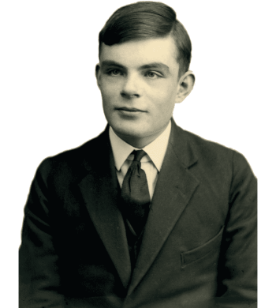

Alan Turing: Quem foi?
Alan foi Um Homem extraordinario sendo matematico e criptógrafo, que na juventude lutando na segunda guerra desifrou o codigo de comunicação alemã, e para isso desenvolveu tecnologias que nem existiam na época. Ajudando o encerramento da 2 guerra a ser mais rapida.
A Historia
nascido em 23 de junho de 1912 em Londres inglaterra. Seu pai, Julius mathison Turing, era um oficial que trabalhava na Madras Presidency, uma região administrativa criado pelis britanicos. Sua mãe, Ethel Sara Stoney, era filha de um engenheiro-chefe que também trabalhava nessa região. Durante sua infância Turing estudou em varias escolas sendo Sherborne uma delas, Alguns estudos feitos sobre a vida de Turing mostravam que, em Sherborne, ele logo demonstrou grande interesse pela matemática, e apesar de ser atualmente reconhecido com genio, algumas de sua notas eram apenas regulares.
Turing ja com seus 18 anos de idade, ingressou no curso de matemática pela Universidade de Cambridge, e gradou-se em 1934, com honras. Seguindo a carreira de matemático e criptografico.

Vida profissional
Em 1936, Turing apresentou uma teoria a respeito da construção de uma máquina capaz de realizar calculos. A partir de 1938, passou a integrar uma organização do governo britânico, responsavel por quebrar códigos e enigmas, chamada government Code and Cypher School.
No começo da Segunda Guerra, Turing ingressou no Bletchley Park, a instalação que reuniu grandes matemáticos e ciptógrafos e que teve papel crucial na interceptação de mensagem enviadas pelos Exércitos do Eixo.
Os Alemães ultilizavam a Enigma, uma máquina alemã que ciptrograva as mensagens que eram enviadas pelo exército e tornava-as quase indecifráveis.
A máquina ultilizada pelos britanicos na decodificação das mensagens foi resultado do trabalho de Turing. Sua teoria inspirou-se nos estudo do polonês Marian Rejewski, e a execução do trabalho realizado pelo engenheiro Harold Keen.
O PAI DA COMPUTACAO
A primeira bomba eletromecânica desenvolvida por meio dos estudos de Alan Turing ficou pronta em março de 1940 e foi nomeada Victory. As máquinas construídas com base nesse modelo desenvolvido por Alan Turing foram essenciais para os Aliados na Segunda Guerra Mundial, porque lhes deram uma vantagem estratégica extremamente importante: informação.
As mensagens decifradas pelas Bomde de Turing faziam parte do Ultra - Departamento de inteligência britanico responsavel por interceptar e decifrar as mensagens enviadas pelos sistemas de comunicação do Eixo. O Ultra teve atuação destacada na receptação de mensagens alemãs e contribuiu também para decifrar códigos japoneses.
Esse foi um departamento gigantesco, chegando a contar com seis mil trabalhadores, dos quais Alan Turing foi um dos nomes mais proeminentes. Por conta de sua importância, esse departamento era conhecido apenas pelo mais alto escalão do governo e do exército britânico. O líder soviético Josef Stalin, por exemplo, nunca soube como os britânicos conseguiam obter informações dos alemães.
Por meio das informações decodificadas pela máquina projetada por Turing, os britânicos conseguiram mapear a posição de embarcações alemãs, e, com isso, era possível desviar a rota das embarcações inglesas com antecipação.
O sistema de decodificaçao desenvolvido por Turing e sua equipe e o trabalho por meio do Ultra também contribuiram em batalhas realizadas no norte da África, na Grécia, na Normandia etc. Além de ajudar na vitória, Turing e sua invenção contribuiram para encurtar o tempo da Segunda Guerra e foram responsaveis por salvar a vida de milhões de pessoas.
O FIM DE UMA LENDA
Em 1952 na inglaterra, vai a delegacia denunciar um cara que tinha derrubado sua casa, mas chegando lá os policiais o prendao por "indencencia" Por ser Homossexual, e fizeram castração quimica em Turing. Após alguns dias ele se Suicida.
Mesmo tendo a vida injusta e sem de fato receber o mérito que devia ter, Turing será guardado na historia como o pai da ciencia da computaçao, e que sem ele não haveria nem mesmos os nossos computadores hojes